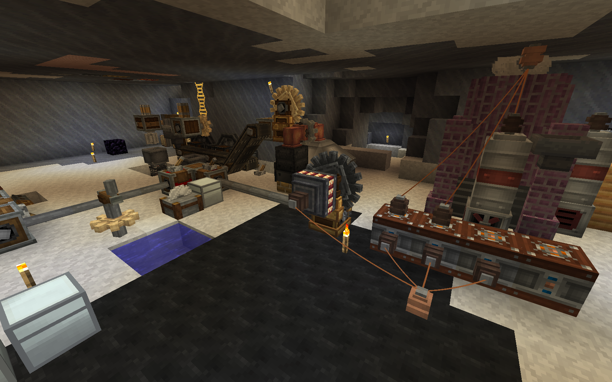

Предисловие: Вдохновляясь движком печи в Create, мы решили, что могли бы сделать что-то более реалистичное и крутое. Основная философия этого мода состоит в том, чтобы предоставить более «реалистичные» методы генерации энергии, а также машины и приспособления, которые будут работать для достижения этой цели. В этот мод можно играть даже в творческом режиме, поскольку он включает в себя множество декоративных блоков, таких как металлические зубчатые колеса.
Этот мод требует Create и Flywheel в качестве необходимых зависимостей. Immersive Engineering — это дополнительная зависимость, которая добавляет в мод сталь
Что мы добавили: Паровые двигатели трех типов: бронзовые, чугунные и стальные. Маховики трех типов: бронзовые, чугунные и стальные. Зубчатые колеса и большие зубчатые колеса трех типов: бронзовые, чугунные и стальные. Паровые: разработаны с учетом совместимости! Паровые жидкости других модов, зарегистрированные под тегом forge:steam, также работают! Камеры сгорания трех типов: бронзовые, чугунные и стальные Паровые котлы трех типов: бронзовые, чугунные и стальные. Полностью настраиваемая мощность парового двигателя, расход пара, воздействие нагрузки на зубчатое колесо, мощность и всасывание динамо-машины.
.png)